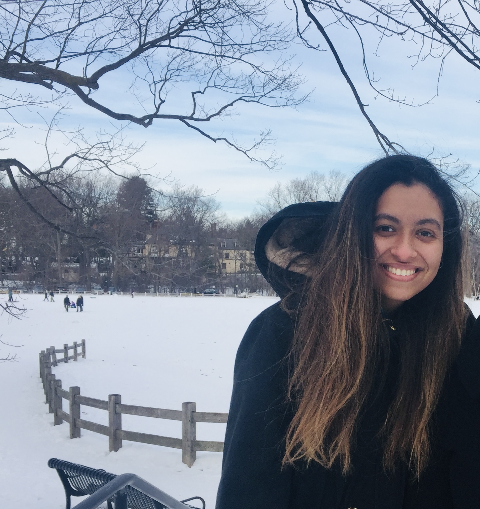

I am a PhD candidate in the public policy department at university of Massachusetts in Boston mentored by Christian Weller and Trevor Memmott. My research interests are in the fields of urban sociology, urban informatics, environmental justice and economic inequality. I integrate innovative computational methods to understand the mechanisms of gentrification, how they are changing across space and time and what are the long-term implications on people experiencing it. By applying natural language processing, causal inference and computer vision on diverse and novel datasets. My research aims to inform policy making process to help everyone live in equitable neighborhoods and societies. As a side note, I enjoy everything related to running and I participate in long distance races as my schedule allows. I will be running my first ultra marathon soon!
Check my CV here!